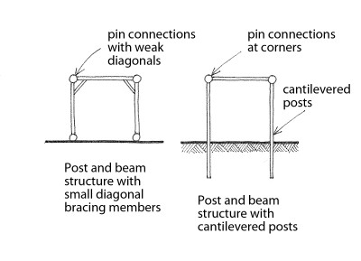

Poste y viga [LPB]
Un marco de postes y vigas , donde los postes están separados varios metros de distancia . Si los postes no están empotrados desde los cimientos , la estabilidad lateral podrá completarse con paredes de relleno o por pequeños miembros de arriostramiento diagonales en las conexiones viga-poste que proporcionan cierta rigidez contra las fuerzas horizontales. Incluye sistemas compuestos por postes en voladizo y cerchas con conexiones simples por pernos. Si la mayoría de la resistencia sísmica es proporcionada por las paredes o muros de relleno , entonces el sistema de carga -resistencia lateral debe ser descrito como Muro.
Note que el sistema de postes y vigas incluye incluye postes o columnas sin vigas conectadas rígidamente que podrían de otra manera transformar este sistema estructural en pórticos resistentes a momento. Si estos elementos verticales tienen una relación de altura a profundidad o a longitud (medida en la dirección que resisten cargas horizontales) menor que 3.0 deberán considerarse como Muros.
